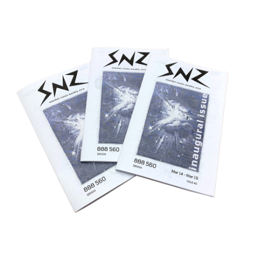
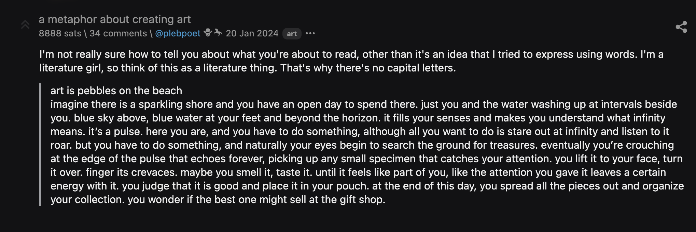
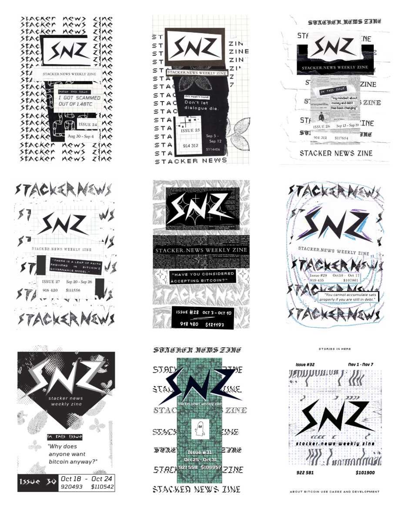

About Stacker News Zine
I am publishing a bitcoin art zine every week.
I make an 8 page spread of the top posts from Stacker News every week, combining great resources and artistic edge.
Stacker News is a bitcoin and lightning forward discussion forum for nerds (a recent poll on slogans). It's where plebs meet online, offering a simple way to send and receive sats, and at the same time, participate in the global discussion and implementation of bergeoning technology.
I chose the moniker "plebpoet" when I logged in for the first time in 2022. Since then, I have shared various things - blog posts, poetry, fiction. For this, I have received handsome rewards (online friends and hella sats). Stacker News continues to be the platform I choose to use bitcoin and talk about art.
My zine is a creative expression of the valuable posts I engage with on Stacker News. 
The quality information that rises to the top of SN daily speaks for itself. My zine is meant to extend its life, taking it beyond webpage and dropping it carefully into your hands. Within it is information you will want if you are trying out lightning wallets, if you are running a node, or if you want a list of places to spend bitcoin in your city. I am publishing something on the soft fork wars nearly every week. But what I love about SN is that this bitcoin-centric dense information is cut with obscure gems. Once in a while, a glimpse into someone's intimate, inner life pops up, absorbs you into it, and you look up thinking, 'how did this anon write what's inside my head?'. An update from a solo founder, street photography, or parenting advice gives life to the website. I love that anything under the sun can shine through the pages of my zine.
Purposefully handmade
The spirit of zines is important to me. It is permissionless publishing. It is expression that no one paid for, close to the creative spout. It's street art.
I have been interested in bitcoin since 2020, and I see it changing the world. It is important to me that my zine can be a living slice of bitcoin culture. Not stuffy, not argumentative, not heavy-handed, not corporate.
The art style I employ is meant to represent this state of mind. It is laid-back, unpolished, folksy and sometimes tech-retro. I want it to be obvious that a human's hand has touched every part of the production.
Collect or Contribute!
I invite you to take a gander at the collection.
On my website, you can see a display of each cover, and clicking on it will take you to its order form.
On my github, you can read the full web version of each zine.
Any interest in writing? Get on Stacker News! Personally, I love to see your original art, poetry, and short stories. There will be a welcoming community to greet you, zaps to give and get once you plug in your wallet, and a long list of territories where conversations on numerous topics are organized. See you there, cyber cowboy.